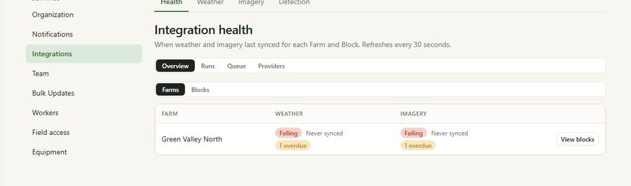

Guide · Process 03
Check what arrived
Subscribing starts a queue, not a picture. This is how you tell the difference between data that has not arrived yet and data that is not coming.
Subscribing starts a queue, not a picture. This is how you tell the difference between data that has not arrived yet and data that is not coming.
Tenant admin, platform admin
5 minutes, then whenever something looks wrong
5 steps
Step by step

The way to tell them apart is the Runs view. On the farm we set up for these guides, Overview read Failing, Never synced, 1 overdue while Runs read "No recent ingestion attempts in the last 14 days". Nothing had failed. Nothing had run yet.
Ask for a backfill deliberately. It re-reads imagery for every pass in the range, so it is the most expensive thing in this process.
Reference
| View | What it answers |
|---|---|
| Overview | Is each farm syncing, for weather and for imagery. |
| Runs | What the recent attempts did, and why one failed. |
| Queue | What is waiting to run right now. |
| Providers | Whether the upstream provider is answering at all. |
| Farms | Farm-level detail. The right view for a farm fetched as one area. |
| Blocks | Block-level detail. Only meaningful for farms that fetch per block. |
| What you see | What it means |
|---|---|
| Failing, never synced, right after subscribing | The first job has not run. Wait for a scheduled cycle. |
| Aggregates look fine but jobs look dead | You are reading block jobs on a farm-level subscription. Read the Farms view. |
| No passes in the scene strip | Either no acquisition, or the cloud limit rejected them all. |
| Numbers on the chart but no baseline band | There is not enough history. Ask for a backfill. |
| Backfill finished but the map is unchanged | The summary tables lag the raw data. Give them time before re-running anything. |
Support
Three channels beside the documentation. All three pages are placeholders for now and will be designed next.